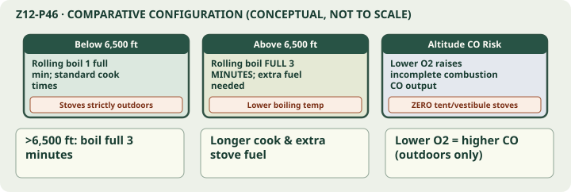

Z12-P46 · Extreme environments · New manuscript
Account for high-altitude boiling time, stove output and increased CO hazards
Adjust water treatment, cooking fuel and stove ventilation rules accurately above 6,500 feet elevation.
When it applies · Mountain camps and high-elevation travel above 6,500 feet (2,000 meters).
Equipment · Timer/watch, extra stove fuel reserve, cold/altitude-rated outdoor stove and strict outdoor-only setup.

Actions
- Follow the CDC altitude boiling rule: above 6,500 feet water boils at a lower temperature, so maintain a full rolling boil for 3 FULL MINUTES (rather than 1 minute below 6,500 feet) to reliably kill microbes after screening out chemical hazards.[W02, X10]
- Pack extra stove fuel and allow longer cooking times at high altitude because lower boiling temperature slows rehydrating food and cold winds drain pot heat faster.[W02, W26, X10]
- Enforce ZERO indoor/tent/vestibule combustion even more strictly at high altitude—CPSC warns that lower atmospheric oxygen increases incomplete combustion and carbon monoxide output from portable fuel stoves and heaters.[C05, C16, X10]
Failure recognition · Boiling stream water for only 45 seconds at 10,000 feet, or pulling a sputtering camp stove inside a tent vestibule during high-altitude wind.[W02, C05, C16]
Verify · Confirm elevation relative to 6,500 feet, time a full 3-minute rolling boil when above it and operate all fuel stoves strictly outdoors.[W02, C05, ED]
Stop or change course · Never run fuel appliances inside alpine tents or snow caves; switch to cold meals or safe backup treatment if outdoor stove use is impossible.[C05, C16, W26]
Evidence and editorial notes
- C05 · CPSC · Portable Heaters and Camping Equipment (current web edition)
- Section: Carbon monoxide poisoning from portable camping equipment · Conditions: Tents, campers, vehicles and other enclosed spaces
Support: Fuel-burning camping equipment can lead to fatal carbon monoxide buildup in enclosed spaces.
Limitations: High altitude increases incomplete combustion and CO production. · Conflicting evidence: None; aligns with CDC-CO and NPS guidance.
Editorial note: Hard-stop prohibition against indoor/vestibule/tent combustion. · Specialist reviewer: Carbon monoxide safety and emergency medicine
Primary source · checked 2026-11-24 - C16 · CDC · Carbon Monoxide Poisoning Basics (current web edition)
- Section: Carbon Monoxide Poisoning Basics > Sources and Prevention · Conditions: Any enclosed or semi-enclosed structure, garage, porch, tent, or vehicle
Support: Never burn charcoal, operate camp stoves, or run fuel-burning heaters inside homes, garages, tents, or vehicles even with doors or windows partly open.
Limitations: Vent cracks and open garage doors do not prevent lethal CO accumulation. · Conflicting evidence: Refutes dangerous myth that cracking a tent vent or garage door makes indoor combustion safe.
Editorial note: Hard-stop rule across all Z02 ventilation and Z03 combustion cards. · Specialist reviewer: Carbon monoxide safety and emergency medicine
Primary source · checked 2026-11-24 - W02 · CDC · How to Make Water Safe in an Emergency (2024-09-19)
- Section: Boil > Steps for boiling water · Conditions: Microbiologically suspect water with acceptable chemical source; portable heat and safe vessel
Support: Clarify cloudy water first. Rolling boil for one minute; above 6,500 feet for three minutes. Cool and cover in sanitized containers.
Limitations: Does not remove dissolved metals, nitrates, fuel, or cyanotoxins. · Conflicting evidence: Older Track B B009 omitted the 6,500 ft threshold; CDC threshold governs.
Editorial note: Require explicit timer verification after rolling boil starts. · Specialist reviewer: Drinking-water safety and public health
Primary source · checked 2026-11-24 - W26 · NPS · Two Ways to Purify Water (current web edition)
- Section: Two Ways to Purify Water · Conditions: Backcountry water treatment planning in National Parks
Support: Boiling and chemical/filtration methods each have fuel, time, weight, and organism-coverage trade-offs; match the primary method and backup to route conditions and follow directions.
Limitations: Does not resolve chemical spills or algal toxins. · Conflicting evidence: Aligns with CDC-T altitude and parasite limits.
Editorial note: Supports primary-plus-backup water treatment selection in Z04. · Specialist reviewer: Backcountry water safety
Primary source · checked 2026-11-24 - X10 · NPS · Rocky Mountain Safety (High-Elevation and Mountain Travel) (current web edition)
- Section: Rocky Mountain Safety > Afternoon Lightning, Rapid Cooling and Steep Terrain · Conditions: High-elevation ridges, alpine passes and mountain weather
Support: Mountain temperatures drop sharply with elevation and sunset, afternoon thunderstorms build rapidly over exposed ridges (requiring early starts and turning back below treeline), and steep snowfields conceal runout hazards.
Limitations: Clear morning skies routinely shift to severe lightning and sleet by early afternoon. · Conflicting evidence: None; integrates with E07, E23 and CDC-ALT.
Editorial note: Grounds mountain timing, treeline retreat and elevation-cooling cards. · Specialist reviewer: Mountain safety and meteorology
Primary source · checked 2026-11-24
Source lineage · CDC boiling, CPSC CO and NPS mountain safety; new manuscript · Classification · New manuscript.